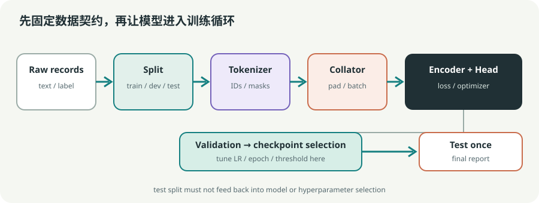

1. 先定义数据契约，而不是先写 Trainer
同一个 BERT Encoder 可以适配多种任务，但每种任务需要明确的数据字段和监督对象。数据契约至少要说明：一条样本代表什么、输入文本字段是什么、标签如何编码、缺失值如何处理、样本唯一 ID 如何追踪，以及训练/验证/测试如何划分。

| 任务 | 每条样本的输入 | 标签结构 | 模型输出 |
|---|---|---|---|
| 单句分类 | text | 一个类别 ID | [CLS] 上的类别 logits |
| 句对分类 | text_a、text_b | 一个类别 ID | 拼接序列的类别 logits |
| NER / 序列标注 | 词序列 | 与原始词对齐的标签序列 | 每个 token 的标签 logits |
| 抽取式 QA | 问题、段落、答案字符区间 | 答案起点/终点或无答案 | start/end logits |
数据契约要在训练前固定。例如分类任务的标签映射应写入配置文件，不能在不同运行中按字母排序自动变化；NER 的标签体系应固定 BIO/BIOES 约定；QA 的答案字符偏移必须对应清洗后的原文，而不是清洗前的字符串。
2. 切分与泄漏：先切分文档，再做增强
最危险的微调错误之一是数据泄漏：同一篇文档的近重复段落同时出现在 train 和 test；同一用户的多个高度相似样本跨越数据集；或把测试集指标用于挑学习率、epoch 和阈值。
- 先按样本来源、文档 ID、用户 ID 或时间分组，再做 train/validation/test 切分。
- 只在训练集上做 oversampling、back-translation、随机删除等数据增强。
- 验证集用于模型选择、阈值与超参数选择；测试集只在配置锁定后做最终评估。
- 类别不平衡时使用分层切分，但不能破坏组级隔离约束。
- 保存 split 文件与样本 ID，确保多次实验使用相同切分。
3. 分类任务：从原始记录到可训练 Batch
以下是一个使用 Hugging Face Datasets 与 Transformers 的最小单句/句对分类骨架。它假设原始数据已整理为 train、validation、test 三个 split，字段名分别为 text、可选的 text_pair 和整数 label。固定版本是为了让 API 参数保持一致；升级依赖时应重新跑测试。
# requirements: transformers==4.46.3 datasets==3.1.0 accelerate==1.1.1 scikit-learn==1.5.2
# Install a PyTorch build separately for the target CPU/CUDA platform.
from datasets import load_dataset
from transformers import (
AutoTokenizer, AutoModelForSequenceClassification,
DataCollatorWithPadding, Trainer, TrainingArguments
)
import numpy as np
from sklearn.metrics import accuracy_score, f1_score
checkpoint = "google-bert/bert-base-chinese"
raw = load_dataset("json", data_files={
"train": "data/train.jsonl",
"validation": "data/validation.jsonl",
"test": "data/test.jsonl",
})
label_names = ["negative", "positive"]
tokenizer = AutoTokenizer.from_pretrained(checkpoint, use_fast=True)
def tokenize(batch):
text_pair = batch.get("text_pair")
return tokenizer(
batch["text"], text_pair,
truncation=True, max_length=256
)
tokenized = raw.map(tokenize, batched=True)
model = AutoModelForSequenceClassification.from_pretrained(
checkpoint,
num_labels=len(label_names),
id2label={i: name for i, name in enumerate(label_names)},
label2id={name: i for i, name in enumerate(label_names)},
)
def compute_metrics(prediction):
logits, labels = prediction
predicted = np.argmax(logits, axis=-1)
return {
"accuracy": accuracy_score(labels, predicted),
"macro_f1": f1_score(labels, predicted, average="macro"),
}
args = TrainingArguments(
output_dir="runs/bert-classifier",
evaluation_strategy="epoch",
save_strategy="epoch",
load_best_model_at_end=True,
metric_for_best_model="eval_macro_f1",
greater_is_better=True,
learning_rate=2e-5,
per_device_train_batch_size=16,
per_device_eval_batch_size=32,
num_train_epochs=3,
weight_decay=0.01,
warmup_ratio=0.1,
seed=42,
report_to="none",
)
trainer = Trainer(
model=model,
args=args,
train_dataset=tokenized["train"],
eval_dataset=tokenized["validation"],
tokenizer=tokenizer,
data_collator=DataCollatorWithPadding(tokenizer),
compute_metrics=compute_metrics,
)
trainer.train()
# 只有模型选择与超参数锁定后，才在 test split 上做一次最终评估。
print(trainer.evaluate(tokenized["test"]))这段代码演示的是分类任务的接口，不包含语料清洗、标签审计、超参数搜索和多随机种子报告。对句对任务，tokenizer 的第二个位置参数会把两段文本按模型约定打包；对单句任务则不传第二段。动态 padding 由 DataCollatorWithPadding 按当前 batch 的最长样本补齐，减少大量无效 padding token。
4. NER：WordPiece 标签必须对齐到原始词
假设原始词序列是 [New, York, is, busy]，标签是 [B-LOC, I-LOC, O, O]。Tokenizer 可能把 York 或其他词拆成多个 sub-token。此时模型输出长度是 WordPiece token 数，而标注文件长度是原始词数，两者不能直接逐项相加。
使用 fast tokenizer 时，可以通过 word_ids() 找到每个 sub-token 对应的原始词索引。一个常见策略是只给每个原始词的第一个 sub-token 保留标签，其余 sub-token 设为 -100，使 CrossEntropyLoss 忽略它们。也有实现会把标签传播到所有 sub-token；两种策略会改变训练目标，必须与评估时的还原方式一致。
encoding = tokenizer(
words, is_split_into_words=True,
truncation=True, return_offsets_mapping=True
)
word_ids = encoding.word_ids()
aligned = []
previous_word_id = None
for word_id in word_ids:
if word_id is None:
aligned.append(-100) # [CLS] / [SEP] / padding
elif word_id != previous_word_id:
aligned.append(word_labels[word_id])
else:
aligned.append(-100) # continuation sub-token
previous_word_id = word_id不要把 -100 当作真实类别；它是损失函数的 ignore_index。评估时应把 WordPiece 预测还原到原始词级别，再计算实体级 precision、recall、F1，而不是直接对所有 sub-token 计算 token accuracy。
5. 抽取式 QA：字符偏移、溢出窗口与合法 span
QA 数据常用原始段落中的答案字符起点和答案文本作为标注。Tokenizer 会把字符文本变成 sub-token，因此需要利用 offset_mapping 将字符区间映射到 token 区间。若问题加段落超过最大长度，必须使用 overflow window 和 stride，让长段落被多个重叠窗口覆盖。
每个窗口中要区分问题 token、段落 token、特殊 token 和 padding。答案起点/终点必须落在当前窗口的段落范围内；若答案不在窗口里，该窗口通常被标记为无答案样本。推理时不能简单独立取 start argmax 和 end argmax，因为可能得到 end 早于 start 的非法 span。应对候选 (i,j) 施加约束：j≥i、答案长度不超过上限、两端都位于段落 token 范围内，再比较 span 分数。
对 SQuAD 2.0 等不可回答任务，还要明确无答案策略：可以用 [CLS] 作为 null span，也可以增加 answerability classifier；具体方法必须与训练目标和评估脚本一致。
6. 训练循环：有效 Batch、调度器与梯度累积
多卡训练中，名义 batch size 不是单卡 batch size。若每张设备的 batch 为 B，设备数为 N，梯度累积步数为 A，则有效 batch 为：
若训练集有 N_train 条样本、有效 batch 为 B_effective、训练 E 个 epoch，那么不丢弃最后不完整 batch 时，优化器更新步数约为。实际值还受分布式 sampler、drop_last 与 batch packing 影响：
学习率 scheduler 通常按 optimizer update step 前进，而不是按每个 micro-batch 前进。梯度累积时应先对 loss 做适当缩放，并只在累积完成后执行 optimizer.step() 与 scheduler.step()。如果把 scheduler 总步数按 micro-batch 计算，warmup 与衰减速度就会错位。
7. 评估与复现：报告结果，也报告不确定性
- 分类任务报告 accuracy 与适合类别不平衡的 macro/micro F1；说明正类定义、阈值和标签映射。
- NER 使用实体级 span F1，并说明子词标签对齐策略。
- QA 报告 EM/F1，说明不可回答阈值、滑窗 stride 和最大答案长度。
- 至少固定 split、checkpoint revision、tokenizer、最大长度、优化器、学习率日程、随机种子与评测脚本版本。
- 小数据集对随机种子敏感。应报告多个种子的均值和标准差，而不是只挑最好的一次。
8. 交互：选择任务，检查数据与标签接口
任务数据契约
选择任务，观察样本字段、tokenization 与 loss 的差别。
记录字段：text、label Tokenizer：单句编码，truncation=True，动态 padding 标签：一个整数类别 ID 输出：[CLS] logits，shape [batch, num_labels] 损失：CrossEntropyLoss
关键结论
- 先定义数据契约和 split，再选择 tokenizer、任务头与 Trainer；训练代码无法补救错误的数据切分。
- 动态 padding 降低 padding 计算；NER 需要词到 sub-token 的标签对齐；QA 需要字符偏移与窗口映射。
- 有效 batch 和 scheduler 更新步数必须按 optimizer step 计算，不能把 micro-batch 数误当总步数。
- 测试集只做最终评估；小数据任务应报告多随机种子的均值与方差。
官方文档与延伸阅读
- Hugging Face, Trainer (Transformers v4.46.3)。
- Hugging Face, Data collators 与 Token classification。
- Hugging Face, Question answering。
- Devlin et al., BERT, §4 and Appendix A.5。